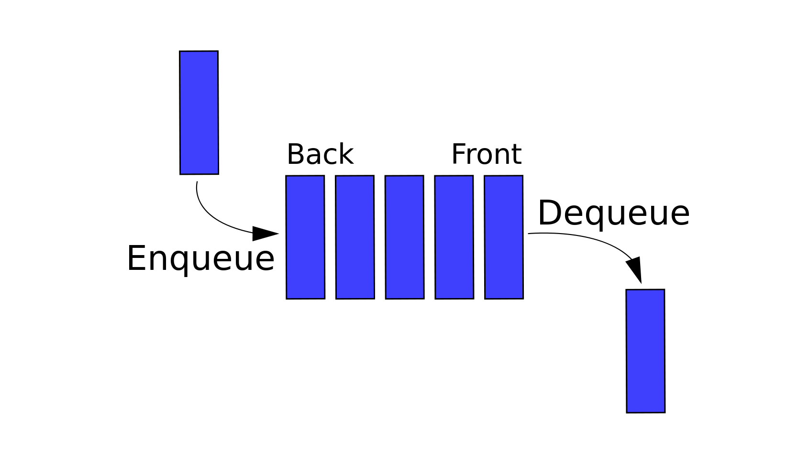

Source: GeeksforGeeks
- A queue is a data structure that is used to store data in sequential order, just like a stack.
- The elements are stored in a first-in first-out order. (FIFO)
- A queue can be thought of like a checkout line at a store. The first person to enter will be the first person out.
-
Like stack, a queue typically has three main functions: push, pop, and peek.
- push, or enqueue, adds an element to the back of the queue.
- pop, or dequeue, returns and removes the element at the front of the queue.
- peek returns the element at the front of the queue without removing it.